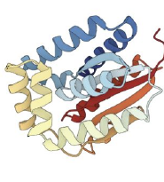
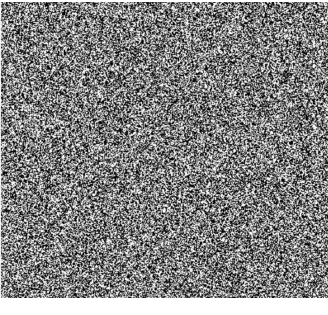
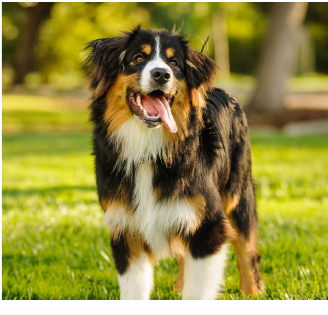
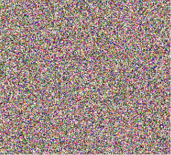
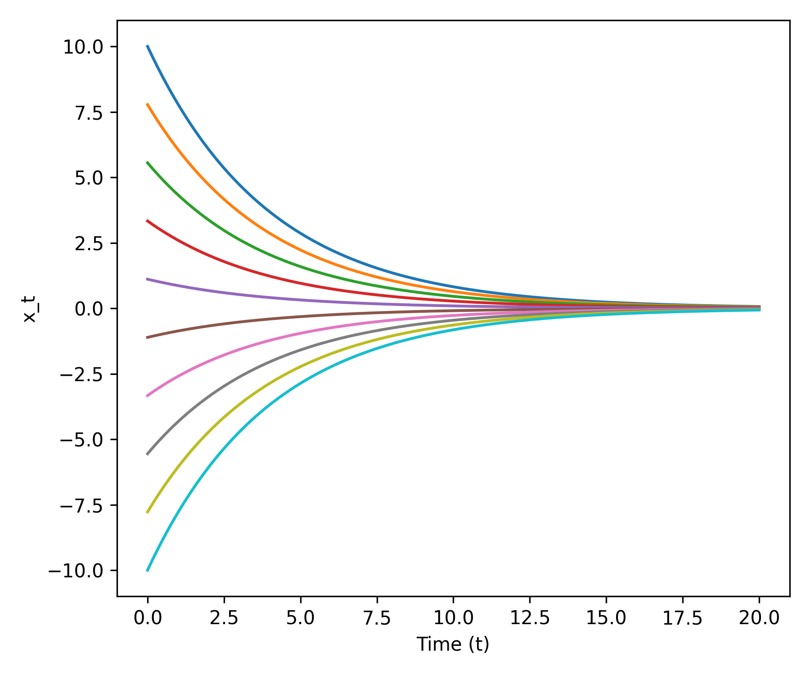
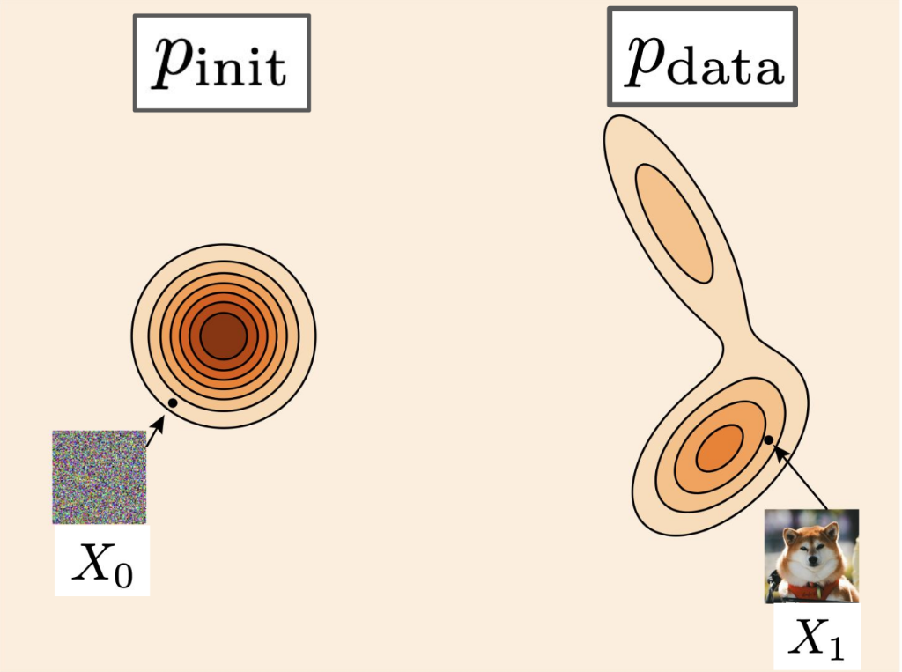

Diffusion and Flow Models
Credits: Introduction to Flow Matching and Diffusion Models by Peter Holderrieth
Credits: Introduction to Flow Matching and Diffusion Models by Peter Holderrieth
Flow Matching by Mario Gemoll
Credits: Introduction to Flow Matching and Diffusion Models by Peter Holderrieth
Flow Matching by Mario Gemoll
Credits: Introduction to Flow Matching and Diffusion Models by Peter Holderrieth
Credits: Introduction to Flow Matching and Diffusion Models by Peter Holderrieth
Credits: Introduction to Flow Matching and Diffusion Models by Peter Holderrieth
A new generation of AI systems are “creative” they generate new objects.
Goal of these notes:
- Flow and diffusion models from first principles.
- The minimal but necessary amount of mathematics for 1.
- How to implement and apply these algorithms.
From Generation to Sampling
Images
- Height \(H\) and Width \(W\)
- 3 color channels (RGB)
\[\mathbf{z} \in \mathbb{R}^{H \times W \times 3}\]
Videos
- \(T\) time frames
- Each frame is an image
\[\mathbf{z} \in \mathbb{R}^{T \times H \times W \times 3}\]
Molecular structures
- \(N\) atoms
- Each atom has 3 coordinates
\[\mathbf{z} \in \mathbb{R}^{N \times 3}\]

What does it mean to successfully generate something?
Prompt: “A picture of a dog”

Useless(Impossible)
Bad
(Rare)
Wrong animal
(Unlikely)

Great!(Very likely)
Generation as Sampling the Data Distribution
We think of the objects we want to generate as following a data distribution \(p_{\text{data}}\). This is a probability density function:
\[p_{\text{data}} : \mathbb{R}^d \to \mathbb{R}_{\ge 0}, \quad \mathbf{z} \mapsto p_{\text{data}}(\mathbf{z})\]
Crucial Note: In practice, we do not know the analytical form of \(p_{\text{data}}\)!
In this framework, generation means sampling from the data distribution:
\(\mathbf{z} \sim p_{\text{data}}\) \(\quad \implies \quad\) \(\mathbf{z} =\)
What consists a Dataset?
Since we don’t know \(p_{\text{data}}\), we rely on a dataset: a finite collection of samples drawn from it.
- Images: Publicly available images from the internet (e.g., LAION, ImageNet).
- Videos: Large-scale video repositories (e.g., YouTube).
- Molecular structures: Scientific repositories (e.g., Protein Data Bank).
Mathematically, a dataset is a collection: \[\{\mathbf{z}_1, \dots, \mathbf{z}_N\} \sim p_{\text{data}}\]
Conditional Generation
Standard (unconditional) generation samples from \(p_{\text{data}}\). However, we often want to condition our generation on a prompt or label \(y\) (e.g., \(y = \text{"Dog"}\)).
Unconditional (\(p_{\text{data}}\))
Fixed prompt “Dog” — diverse samples of the same category:
Conditional (\(p_{\text{data}}(\cdot|y)\))
Changing \(y\) gives different targeted categories:
Conditional generation means sampling the conditional data distribution: \[ \color{#a71d5d}{\mathbf{z} \sim p_{\text{data}}(\cdot | y)} \]
We will first focus on unconditional generation and then learn how to translate an unconditional model to a conditional one.
Generative Models as Transformers
A generative model converts samples from a simple initial distribution \(p_{\text{init}}\) into samples from the complex data distribution \(p_{\text{data}}\).
Initial State
\[\mathbf{x} \sim p_{\text{init}}\]
\(\mathcal{N}(0, \mathbf{I}_d)\)

\(\implies\)
Generative Model
\(\implies\)
Target Sample
\[\mathbf{z} \sim p_{\text{data}}\]
(Real Object)
Existence and Uniqueness Theorem ODEs
Theorem (Picard–Lindelöf theorem): If the vector field \(u_t(x)\) is continuously differentiable with bounded derivatives, then a unique solution to the ODE
\[ X_0 = x_0, \quad \frac{\mathrm{d}}{\mathrm{d}t}X_t = u_t(X_t) \]
exists. In other words, a flow map exists. More generally, this is true if the vector field is Lipschitz.
Key takeaway: In the cases of practical interest for machine learning, unique solutions to ODE/flows exist.
Example: Linear ODE
Simple vector field:
\[ u_t(x) = -\theta x \quad (\theta > 0) \]
Claim: Flow is given by
\[ \psi_t(x_0) = \exp(-\theta t) x_0 \]
Proof:
Initial condition: \[ \psi_t(x_0) = \exp(0)x_0 = x_0 \]
ODE: \[ \frac{\mathrm{d}}{\mathrm{d}t} \psi_t(x_0) = \frac{\mathrm{d}}{\mathrm{d}t} \left(\exp(-\theta t) x_0\right) = -\theta \exp(-\theta t) x_0 = -\theta \psi_t(x_0) = u_t(\psi_t(x_0)) \]

{kind=link}
Euler Method: Coarse vs Fine Steps
Toy example
{kind=link}

{kind=link}
Brownian Motion or the Wiener Process
Brownian motion describes the random motion of particles in fluids or gases. It is basically a random walk. Mathematically it can be modeled as a Wiener process. For our purposes, we can think of this as a path starting at the origin at \(t = 0\), and then proceeding with step size \(h\), adding noise from a standard Gaussian scaled by \(\sqrt{h}\) at each step, until \(t = 1\):
\[ W_{t+h} = W_t + \sqrt{h}\epsilon_t, \quad \epsilon_t \sim \mathcal{N}(0, Id) \quad (t = 0, h, 2h, \dots, 1 - h) \]
Note: A single stochastic process can give rise to many trajectories as the evolution becomes random.
Stochastic Differential Equations (SDEs)
We can add some Brownian motion to the paths taken by particles moving along a vector field described by an ODE, which gives rise to the concept of a stochastic differential equation (SDE):
\[ \begin{align*} \mathrm{d}X_t &= u_t(X_t)\mathrm{d}t + \sigma_t \mathrm{d}W_t \\ X_0 &= x_0 \end{align*} \]
For the details about the \(\mathrm{d}X\) notation, see Holderrieth & Erives, 2025.
The \(\sigma_t\) in the above equation is called the diffusion coefficient and controls the amount of randomness (the ODE term \(u_t(X_t)\) is also called the drift coefficient).
Such an SDE can be approximated by the Euler-Maruyama method (basically the Euler method with some randomness added to it):
\[ x_{t+h} = x_t + h u_t(x_t) + \sqrt{h} \sigma_t \epsilon_t, \quad \epsilon_t \sim \mathcal{N}(0, I_d) \]
Existence and Uniqueness Theorem SDEs
Theorem: If the vector field \(u_t(x)\) is continuously differentiable with bounded derivatives and the diffusion coeff. is continuous, then a unique solution (in distribution) to the SDE
\[ X_0 = x_0, \quad \mathrm{d}X_t = u_t(X_t)\mathrm{d}t + \sigma_t\mathrm{d}W_t \]
exists. More generally, this is true if the vector field is Lipschitz.
Key takeaway: In the cases of practical interest for machine learning, unique solutions to SDEs exist.
Stochastic calculus class: Construct solutions via stochastic integrals and Ito-Riemann sums
{kind=link}
Ornstein-Uhlenbeck Process
\[ \dd X_t = -\theta X_t \dd t + \sigma \dd W_t \]
{kind=link}
{kind=link}